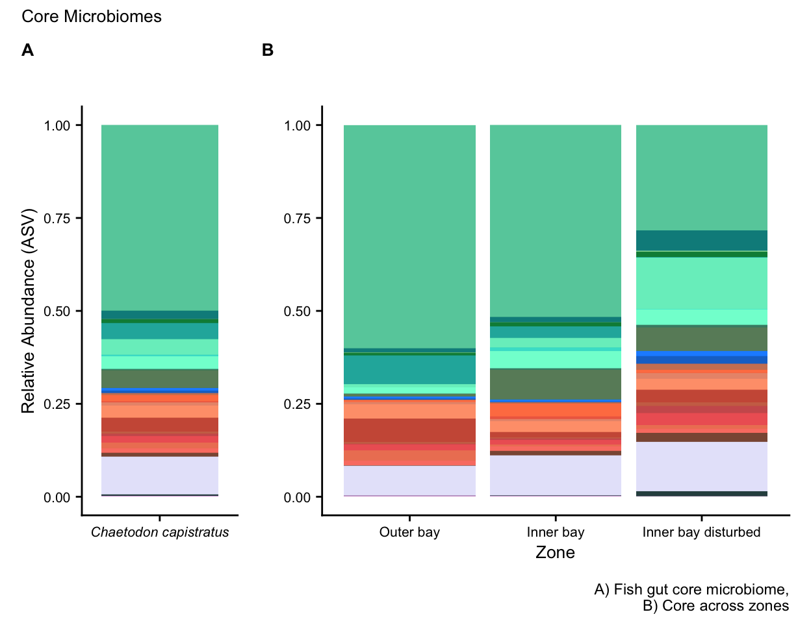

Script to identify the core fish gut microbiome using Indicator Analysis.
Here, we use unrarefied data to identify the core. First, we get ps object containing all unrarefied sample fractions (i.e. fish, water, & potential prey items).
ps.slv.tree.mbio.bocas <- readRDS("rdata/p1/ps_16S_capis_bocas_all_unrar.rds")
ps.slv.tree.mbio.bocas
phyloseq-class experiment-level object
otu_table() OTU Table: [ 10711 taxa and 127 samples ]
sample_data() Sample Data: [ 127 samples by 11 sample variables ]
tax_table() Taxonomy Table: [ 10711 taxa by 11 taxonomic ranks ]
phy_tree() Phylogenetic Tree: [ 10711 tips and 10710 internal nodes ]Here is a summary table of all samples.
Next, we make a column in taxonomy table for ASV IDs by number. Caution, ASV ID numbers will differ between the core (unrarefied) and the rarefied data set.
tax_table(ps.slv.tree.mbio.bocas) <- cbind(tax_table(ps.slv.tree.mbio.bocas),
rownames(tax_table(ps.slv.tree.mbio.bocas)))
colnames(tax_table(ps.slv.tree.mbio.bocas)) <-
c("Kingdom", "Phylum", "Class",
"Order", "Family", "Genus", "ASV")Next, we change row names in taxonomy table to AVS IDs for plotting purposes.
taxa_names(ps.slv.tree.mbio.bocas) <- 1:ntaxa(ps.slv.tree.mbio.bocas)
taxa_names(ps.slv.tree.mbio.bocas) <- paste("ASV_",
taxa_names(ps.slv.tree.mbio.bocas),
sep = "") #JJS# Changed
tax.unrar.bocas.all <- data.frame(tax_table(ps.slv.tree.mbio.bocas))
tax.unrar.new <- data.frame(ASV_ID = row.names(tax.unrar.bocas.all),
tax.unrar.bocas.all)
tax.unrar.new <- tax.unrar.new[, c(2,3,4,5,6,7,1,8)]
tax.unrar.new2 <- as.matrix(tax.unrar.new)
ps.slv.tree.mbio.bocas <- merge_phyloseq(otu_table(ps.slv.tree.mbio.bocas),
tax_table(tax.unrar.new2),
sample_data(ps.slv.tree.mbio.bocas),
phy_tree(ps.slv.tree.mbio.bocas))
saveRDS(ps.slv.tree.mbio.bocas, "rdata/p1/ps_16S_bocas_unrar_all_ASVID.rds")We will also rename all NA taxa by the next highest named rank. To do this we first, create a copy of the original ps object before renaming taxa. That way we have a copy for other analyses.
ps.slv.tree.mbio.bocas_o <- ps.slv.tree.mbio.bocas
tax.clean <- data.frame(tax_table(ps.slv.tree.mbio.bocas))
for (i in 1:6){ tax.clean[,i] <- as.character(tax.clean[,i])}
tax.clean[is.na(tax.clean)] <- ""
for (i in 1:nrow(tax.clean)){
if (tax.clean[i,2] == ""){
kingdom <- base::paste("k", tax.clean[i,1], sep = "_")
tax.clean[i, 2:6] <- kingdom
} else if (tax.clean[i,3] == ""){
phylum <- base::paste("p", tax.clean[i,2], sep = "_")
tax.clean[i, 3:6] <- phylum
} else if (tax.clean[i,4] == ""){
class <- base::paste("c", tax.clean[i,3], sep = "_")
tax.clean[i, 4:6] <- class
} else if (tax.clean[i,5] == ""){
order <- base::paste("o", tax.clean[i,4], sep = "_")
tax.clean[i, 5:6] <- order
} else if (tax.clean[i,6] == ""){
tax.clean$Genus[i] <- base::paste("f",tax.clean$Family[i], sep = "_")
}
}
rm(class, order, phylum, kingdom)Then, we create new ASV names that have lowest rank name attached.
tax.clean <- tax.clean %>% unite("ASV_IDa", Genus:ASV_ID,
remove = FALSE, sep = "_")
tax.clean <- tax.clean %>% unite("ASV_IDb", ASV_ID:Genus,
remove = FALSE, sep = "_")
tax.clean <- tax.clean[, c(1,2,3,4,5,8,9,6,7,10)]
tax.clean$ASV_IDa <-
str_replace_all(tax.clean$ASV_IDa,
'Clostridium_sensu_stricto_[0-9]',
'Clostridium')
tax.clean$ASV_IDb <-
str_replace_all(tax.clean$ASV_IDb,
'Clostridium_sensu_stricto_[0-9]',
'Clostridium')
tax.clean$ASV_IDc <- tax.clean$ASV_IDa
tax.clean$ASV_IDc <-
str_replace_all(tax.clean$ASV_IDc,
'_ASV', '')
tax.clean <- tax.clean[, c(1,2,3,4,5,6,7,8,9,11,10)]
write.csv(tax.clean, "tables/p1/tax_all_new_no_na.csv")And finally, add the taxonomy table back to the phyloseq object.
tax_table(ps.slv.tree.mbio.bocas) <- as.matrix(tax.clean)
rank_names(ps.slv.tree.mbio.bocas)
saveRDS(ps.slv.tree.mbio.bocas, "rdata/p1/ps_16S_bocas_unrar_all_ASVID_no_NA.rds")Now we can run the Indicator Analysis.
Step one is to generate an ASV table without row names.
data.IndVal.env.fish <- data.frame(otu_table(ps.slv.tree.mbio.bocas))
data.IndVal.env.fish
data.IndVal.ASV <- tibble::remove_rownames(data.IndVal.env.fish)And then generate an Indicator value group file.
data.IndVal.group <- data.frame(sample_data(ps.slv.tree.mbio.bocas)) %>%
select(Fraction)
data.IndVal.group$Status <- data.IndVal.group$Fraction
data.IndVal.group <- data.IndVal.group[, c(2,1)]
data.IndVal.group$Status <- str_replace(data.IndVal.group$Status, "Environment", "1")
data.IndVal.group$Status <- str_replace(data.IndVal.group$Status, "Fish", "2")
data.IndVal.group <- tibble::rownames_to_column(data.IndVal.group, "Label")
data.IndVal.group$Status <- as.integer(data.IndVal.group$Status)
data.IndVal.group$Fraction <- as.character(data.IndVal.group$Fraction)Next, calculate the indicator values. We set a seed for reproducibility and saved a table of results.
set.seed(1280)
iva <- indval(data.IndVal.ASV, data.IndVal.group$Status)
#Table of the significant indicator species at p= 0.01
gr <- iva$maxcls[iva$pval <= 0.01]
iv <- iva$indcls[iva$pval <= 0.01]
pv <- iva$pval[iva$pval <= 0.01]
fr <- apply(data.IndVal.ASV > 0, 2, sum)[iva$pval <= 0.01]
indval.out <- data.frame(group = gr, indval = iv, pval = pv, freq = fr)
indval.out <- indval.out[order(indval.out$group, -indval.out$indval),]
indval.out
write.csv(indval.out,
file = "tables/p1/IndVal_microbiome_env_fish_output_p01_new0.csv")Finally, we correct p-values for repeated testing and save a new table of corrected results.
indval.out.prob.corrected = p.adjust(indval.out$pval, "bonferroni")
write.csv(indval.out.prob.corrected,
file = "tables/p1/IndVal_microbiome_env_fish_bonf_new0.csv")Now we plot the results of the fish core by subsetting only the ASVs that were significant for fish. First, we grab the ASVs from the phyloseq object.
fish_ind_asvs <- indval.out[indval.out$group == 2, ]
fish_ind_asvs_list <- row.names(fish_ind_asvs)
ps.indv.core.01 <- subset_taxa(ps.slv.tree.mbio.bocas,
rownames(tax_table(ps.slv.tree.mbio.bocas)) %in%
fish_ind_asvs_list)
ps.indv.core.01Then pull out the fish-only samples.
ps.indv.core.fish <- subset_samples(ps.indv.core.01, Fraction == "Fish")
sample_data(ps.indv.core.fish)
tax.core <- tax_table(ps.indv.core.fish)
write.csv(tax.core, file = "tables/p1/tax_indVal_core.csv")
tax_core_mod <- read.csv("tables/p1/tax_indVal_core.csv", header = TRUE, row.names = 1)
tax_core_mod2 <- as.matrix(tax_core_mod)And add the modified tax table to ps object and save ps object. This contains all ASVs identified with Indicator analysis at 0.01 for fish gut samples.
ps.indv.core.fish <- merge_phyloseq(otu_table(ps.indv.core.fish),
tax_table(tax_core_mod2),
sample_data(ps.indv.core.fish),
phy_tree(ps.indv.core.fish))
saveRDS(ps.indv.core.fish, "rdata/p1/ps_indv01_core_fish.rds")
ps.indv.core.fish <- readRDS("rdata/p1/ps_indv01_core_fish.rds")
phyloseq-class experiment-level object
otu_table() OTU Table: [ 27 taxa and 89 samples ]
sample_data() Sample Data: [ 89 samples by 11 sample variables ]
tax_table() Taxonomy Table: [ 27 taxa by 11 taxonomic ranks ]
phy_tree() Phylogenetic Tree: [ 27 tips and 26 internal nodes ]Here is a summary of the data set.
| Metric | Results |
|---|---|
| Min. number of reads | 326 |
| Max. number of reads | 63937 |
| Total number of reads | 2775814 |
| Average number of reads | 31189 |
| Median number of reads | 33658 |
| Sparsity | 0.513 |
| Any ASVs sum to 1 or less? | FALSE |
| Number of singleton ASVs | NA |
| Percent of ASVs that are singletons | NA |
And a look at the individual ASVs.
First, we set all of the plot parameters
ASV_colors <- c(
"mediumaquamarine","darkcyan", "darkseagreen2",
"springgreen4", "lightseagreen","aquamarine2",
"turquoise", "aquamarine","aquamarine4", "darkseagreen4",
"dodgerblue1","dodgerblue3", "lightsalmon3", "coral",
"coral2","darksalmon","lightsalmon","coral3", "salmon3" ,
"indianred", "indianred2","salmon2", "salmon","lightsalmon4",
"lavender","darkslategrey","plum3")
level_order <- c('Outer bay',
'Inner bay',
'Inner bay disturbed')
level_order2 <- c('SCR', 'PPR', 'CCR', 'ALR',
'SIS','ROL','RNW', 'PST', 'PBL')
asv_order <- rev(c("ASV_95", "ASV_589", "ASV_2", "ASV_25", "ASV_18",
"ASV_15", "ASV_14", "ASV_94", "ASV_30", "ASV_10",
"ASV_9", "ASV_24", "ASV_74", "ASV_19", "ASV_39",
"ASV_41", "ASV_27", "ASV_7", "ASV_68", "ASV_6",
"ASV_59", "ASV_5", "ASV_3", "ASV_17", "ASV_163",
"ASV_11", "ASV_1"))Then we agglomerate at phylum level and transform read counts to relative abundance.
capis.core <- ps.indv.core.fish %>%
tax_glom(taxrank = "ASV_IDa") %>%
transform_sample_counts(function(x) {x/sum(x)} ) %>%
psmelt() %>%
filter(Abundance > 0.00) %>%
arrange(ASV_IDa)
capis.core$ASV_ID <- gdata::reorder.factor(capis.core$ASV_ID, new.order = asv_order)
capis.core <- capis.core %>% dplyr::arrange(ASV_ID)
capis.core$ASV_IDa <- factor(capis.core$ASV_IDa, levels = unique(capis.core$ASV_IDa))
levels(capis.core$ASV_IDa)
attributes(capis.core$ASV_IDa)Plot first figure.
fig01 <- ggplot(capis.core, aes(x = factor(Zone, level = level_order),
y = Abundance, fill = ASV_IDa)) +
geom_bar(stat = "identity", position = "fill") +
scale_fill_manual(values = ASV_colors) +
scale_x_discrete("Zone", expand = waiver(),
position = "bottom", drop = FALSE) +
guides(fill = guide_legend(reverse = TRUE,
keywidth = 1,
keyheight = 1,
title="ASV ID")) + #JJS# added new title
ylab("") +
ggtitle("", subtitle = "Core across zones") +
theme(plot.title = element_text(size = 18)) +
theme(plot.subtitle = element_text(size = 16)) +
theme_cowplot()Plot second figure.
fig02 <-
ggplot(capis.core, aes(x = Species, y = Abundance, fill = ASV_IDa)) +
geom_bar(stat = "identity", position = "fill") +
scale_fill_manual(values = ASV_colors) +
scale_x_discrete("", expand = waiver(),
position = "bottom", drop = FALSE) +
guides(fill = guide_legend(reverse = TRUE,
keywidth = 1,
keyheight = 1,
title = "ASV ID")) + #JJS# added new title
ylab("Relative Abundance (ASV)") +
ggtitle("Fish gut core microbiome", subtitle = "") +
theme(plot.title = element_text(size = 18)) +
theme_cowplot()
That’s the end of Script 1. In the next Script we compare taxonomic composition across different sample fractions.
The source code for this page can be accessed on GitHub by clicking this link.
If you see mistakes or want to suggest changes, please create an issue on the source repository.
Text and figures are licensed under Creative Commons Attribution CC BY 4.0. Source code is available at https://github.com/bocasbiome/web/, unless otherwise noted. The figures that have been reused from other sources don't fall under this license and can be recognized by a note in their caption: "Figure from ...".